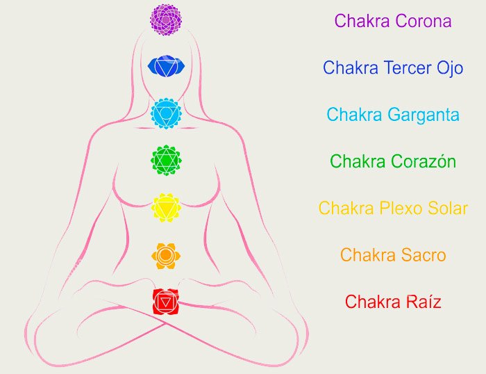

Chakras
Generalidades:
Los Chakras son conocidos en occidente como centros bioenergéticos o centros nervofluídicos, son centros de energía sutil. Su estudio proviene de los textos de yoga clásico. Cada chakra está relacionado con una glándula del sistema endocrino, un plexo, un conjundo de órganos. Por lo que un exceso o déficit de energía en cada uno de ellos puede afectar el equilibrio fisiológico y emocional. A su vez, cada centro bioenergético está relacionado con niveles psíquicos, planetas, colores, metales, sonidos, etcétera. En este artículos presentamos las generalidades de cada uno, comenzando con la forma como se le llama en el lenguaje occidental, seguido de su nombre en sánscrito (el lenguaje antiguo de la India). Al final presentamos un protocolo básico para equilibrarlos.

Cabe destacar que el equilibrio de chakras es un tratamiento complementario al biomagnetismo médico del Dr. Isaac Goiz Durán. Por lo regular, cuando el chakra está sobreexitado se requerirá del polo negativo, mientras que si requiere más energía se aplicará el positivo.
Chakra1:
Chakra Raíz o Muladhara, se encuentra en el periné, entre el sexo y el ano. Es representado como un loto de 4 pétalos rojos. Relacionado con el planeta Saturno y el elemento tierra. por lo que brinda soporte, firmeza, seguridad. Rige el instinto más básico, que es el instinto de supervivencia, manifestándose a través del miedo. Quienes no lo han desarrollado la energía del primer chakra se sienten inseguros, en un mundo incierto, siempre buscan alguien o algo en que apoyarse (codependencia, adicciones). Son personas desorganizadas y con poca voluntad. En cambio; quien lo ha desarrollado tiene la capacidad de vencer obstáculos a través de la tenacidad y esfuerzo continuo. Son personas organizadas, constantes, trabajadoras, confiables.
En el aspecto físico se relaciona con las glándulas suprarrenales, con la piernas, los pies que son nuestras raíces y el contacto con la tierra. Rige el sistema oseo, la estructura.
Chakra 2:
Lumbo-sacro o Swadisthana, localizado a la altura de la lumbar 5 y el sacro. Representado con un loto de 6 pétalos anaranjados. Regido por el planeta Júpiter y el elemento agua, representa un aspecto más dinámico y fluido de la energía. Relacionado con los órganos sexuales y con el instinto sexual que se manifiesta a través de los deseos y placeres, siendo su exceso la lujuria. Quien lo ha desarrollado tiene la capacidad de generar y crear, ya sea en el plano material (riquezas materiales) o en el plano artístico o intelectual.
Se relaciona con las gónadas y el sistema reproductor, en general con los órganos a la altura de la cadera y cintura.
Chakra 3:
Hipogástrico o Manipura (la ciudad de las joyas) se localiza en el plexo solar, entre el diafragma y el ombligo. Representado por 10 pétalos de color amarillo. El planeta Marte es su regente junto con el elemento fuego. Se relaciona con órganos como el hígado y el páncreas y en general con el sistema digestivo. A nivel psíquico tiene que ver con el deseo de dominio que se manifiesta a través del comportamiento agresivo. Su desarrollo va a la par del de la fuerza de voluntad, el valor o corage; mientras que su defecto suele ser la ira incontrolada, que se manifiesta en alteraciones del aparato digestivo.
Chakra 4:
Centro Cardíaco o Anahata. se localiza en el pecho, a la altura del corazón. Ya aquí entramos en un terreno más espiritual, ya que este chakra desarrolla la empatía y el amor. Representado por un loto de 12 pétalos de color verde. Está regido por el planeta Venus y el elemento aire. La energía se va volviendo más sutil y en este caso desarrolla los sentimientos y aspiraciones de amor, unidad, compasión, entendimiento. Relacionado con la glándula timo y el corazón. Los textos antiguos dicen que al despertarlo completamente se alcanza el estado de ananda o dicha completa.
Chakra 5:
Centro laringeo o Vishuddha. es el centro de la comunicación, que se localiza a la altura de la garganta. En la tradición hindú se relaciona con el elemnto akasha o eter por los occidentales. Un elemento de vibración mucho más sutil, Representado por 16 pétalos de color azul claro (cian). La capacidad de comunicación, la elocuencia y la creatividad se manifiestan a través de este centro y sus órganos asociados como son la boca (lenguaje, música) oídos (clariaudiencia) brazos y manos (creatividad y expresión a través de las manos). Se relaciona con la glándula tiroides y con el sistema respiratorio. También representa la comunicación entre el mundo de las ideas (cabeza, cerebro) y el mundo de los sentimientos y deseos (pecho, abdómen) y la forma como exteriorizamos todo este universo interior.
Chakra 6:
Centro frontal o Agna. es el centro de la visión tanto a nivel físico, como a nivel extrasensorial. se localiza en el entrecejo (tercer ojo). Está regido por la Luna, elemento: Maha tattwa (espacio). Representado por 2 pétalos de color índigo (en realidad son 96 pétalos, la mitad de color azul y la otra mitad violeta). A quien lo desarrolla brinda la capacidad de ver más allá de los límites del tiempo y el espacio, desarrolla la conciencia del conocimiento total: "Chit" Relacionado con la glándula hipófisis, con los ojos y en general con el cerebro y sistema nervioso. Brinda la capacidad de imaginar, visualizar y en el plano superior la clarividencia o intuición.
Chakra 7:
Sahasrara o Centro coronario, se sitúa en la coronilla, al centro de la cabeza y se relaciona con la glándula pineal y en general con el equilibrio del sistema endocrino. Representado por un loto violeta de mil pétalos. Su planeta regente es el Sol que nos conecta con el plano del absoluto, con la Concienca cósmica. Cuando se ha desarrollado se puede llegar la Iluminación o Samadhi, que es la conciencia de la Verdad, del Ser: "Sat", la unión del Alma individual con el Alma universal.
Protocolo para equilibrar los chakras
Observaciones:
- El chakra 2 no se aplica en embarazadas.
- El chakra 4 no se aplica si la persona si tiene marcapasos.
- El chakra 6 regularmente se trabaja con el par interciliar - bulbo raquídeo y en pocos casos pedirá ambos imanes sobre interciliar.
- El chakra 7 regularmente no pide que se equilibre.